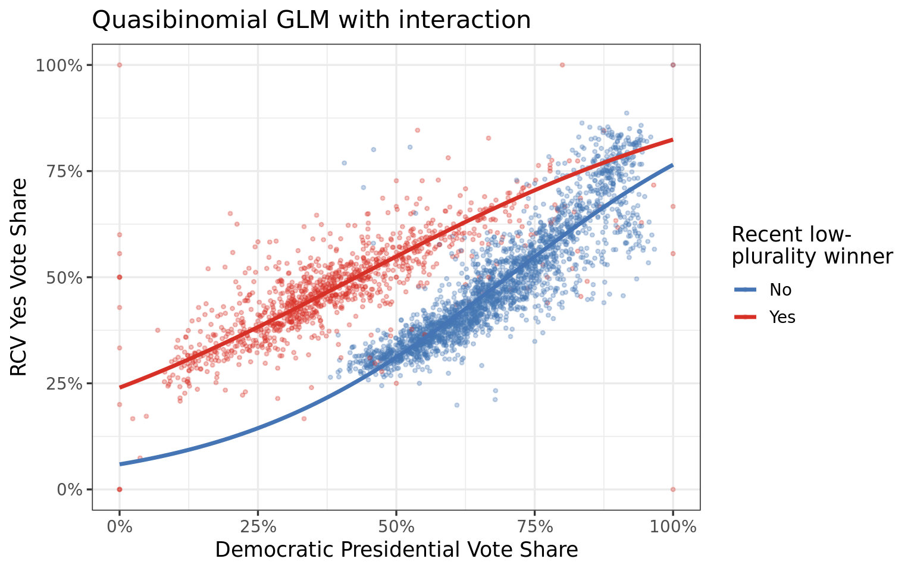
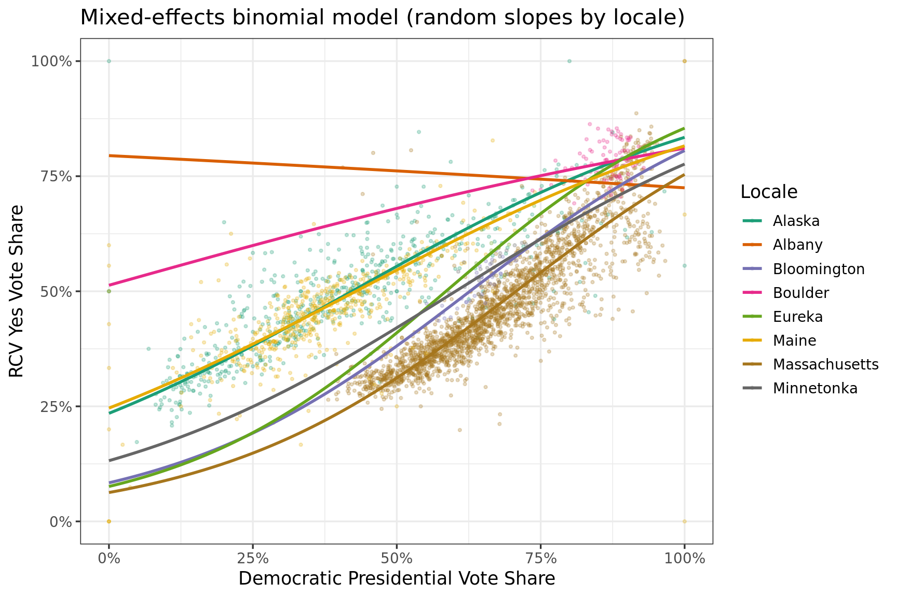

library(dplyr)
library(ggplot2)
library(lme4)
library(scales)
library(broom)
library(broom.mixed)
library(knitr)
load("../data/rcv_data.RData")RCV Ballot Measure Models
Data Preparation
The cleaning pipeline (R/01_clean_and_merge.R) now produces unified rcv_yes and rcv_no columns across all 8 locales.
df <- states_and_cities %>%
filter(!is.na(rcv_yes), !is.na(rcv_no), !is.na(dem_share),
(rcv_yes + rcv_no) > 0) %>%
mutate(
n_votes = rcv_yes + rcv_no,
recent_lpw = factor(recent_lpw, levels = c(FALSE, TRUE),
labels = c("No", "Yes"))
)
df %>%
group_by(locale, rcv_jurisdiction, recent_lpw) %>%
summarise(n_precincts = n(), total_votes = sum(n_votes),
mean_yes = mean(yes_share), .groups = "drop") %>%
kable(digits = 3)| locale | rcv_jurisdiction | recent_lpw | n_precincts | total_votes | mean_yes |
|---|---|---|---|---|---|
| Alaska | statewide | Yes | 578 | 344283 | 0.486 |
| Albany | local | No | 3 | 9765 | 0.733 |
| Bloomington | local | No | 32 | 49497 | 0.512 |
| Boulder | local | No | 88 | 54756 | 0.782 |
| Eureka | local | No | 8 | 11602 | 0.603 |
| Maine | statewide | Yes | 527 | 739201 | 0.456 |
| Massachusetts | statewide | No | 2173 | 3427366 | 0.470 |
| Minnetonka | local | No | 23 | 33768 | 0.547 |
1 – Binomial GLM (pooled)
A binomial GLM with a logit link uses the actual vote counts as the response, properly accounting for the bounded [0, 1] nature of yes_share and giving more weight to precincts with more voters.
m_binom <- glm(
cbind(rcv_yes, rcv_no) ~ dem_share + recent_lpw,
family = binomial(link = "logit"),
data = df
)
summary(m_binom)
Call:
glm(formula = cbind(rcv_yes, rcv_no) ~ dem_share + recent_lpw,
family = binomial(link = "logit"), data = df)
Coefficients:
Estimate Std. Error z value Pr(>|z|)
(Intercept) -2.525168 0.005074 -497.7 <2e-16 ***
dem_share 3.582004 0.007496 477.9 <2e-16 ***
recent_lpwYes 0.974530 0.002765 352.4 <2e-16 ***
---
Signif. codes: 0 '***' 0.001 '**' 0.01 '*' 0.05 '.' 0.1 ' ' 1
(Dispersion parameter for binomial family taken to be 1)
Null deviance: 312814 on 3431 degrees of freedom
Residual deviance: 59268 on 3429 degrees of freedom
AIC: 83823
Number of Fisher Scoring iterations: 4The deviance-to-df ratio measures overdispersion (>>1 means the binomial variance assumption is too tight – common with aggregate vote data).
cat("Residual deviance / df:",
round(deviance(m_binom) / df.residual(m_binom), 1), "\n")Residual deviance / df: 17.3 Overdispersion is expected: precinct vote shares vary more than pure binomial sampling because voters within a precinct are not independent coin flips. A quasibinomial model uses the same point estimates but corrects the standard errors.
m_quasi <- glm(
cbind(rcv_yes, rcv_no) ~ dem_share + recent_lpw,
family = quasibinomial(link = "logit"),
data = df
)
tidy(m_quasi, conf.int = TRUE) %>%
kable(digits = 4, caption = "Quasibinomial GLM: yes ~ dem_share + recent_lpw")| term | estimate | std.error | statistic | p.value | conf.low | conf.high |
|---|---|---|---|---|---|---|
| (Intercept) | -2.5252 | 0.0211 | -119.8107 | 0 | -2.5665 | -2.4839 |
| dem_share | 3.5820 | 0.0311 | 115.0429 | 0 | 3.5210 | 3.6431 |
| recent_lpwYes | 0.9745 | 0.0115 | 84.8392 | 0 | 0.9520 | 0.9971 |
Marginal effects plot
pred_grid <- expand.grid(
dem_share = seq(0, 1, length.out = 200),
recent_lpw = factor(c("No", "Yes"))
)
pred_grid$fit <- predict(m_quasi_int, newdata = pred_grid, type = "response")
ggplot() +
geom_point(data = df,
aes(x = dem_share, y = yes_share, color = recent_lpw),
alpha = 0.3, size = 0.8) +
geom_line(data = pred_grid,
aes(x = dem_share, y = fit, color = recent_lpw),
linewidth = 1.2) +
scale_x_continuous(labels = percent_format(1)) +
scale_y_continuous(labels = percent_format(1), limits = c(0, 1)) +
scale_color_manual(values = c("No" = "#4575B4", "Yes" = "#D73027")) +
labs(x = "Democratic Presidential Vote Share",
y = "RCV Yes Vote Share",
color = "Recent low-\nplurality winner",
title = "Quasibinomial GLM with interaction") +
theme_bw(base_size = 13)
2 – Mixed-effects binomial model (random intercepts by locale)
Precincts are nested within locales that differ in unobserved ways (campaign spending, ballot language, media environment). A random-intercept model accounts for this clustering.
m_glmer <- glmer(
cbind(rcv_yes, rcv_no) ~ dem_share + recent_lpw + (1 | locale),
family = binomial,
data = df,
nAGQ = 10
)
summary(m_glmer)Generalized linear mixed model fit by maximum likelihood (Adaptive
Gauss-Hermite Quadrature, nAGQ = 10) [glmerMod]
Family: binomial ( logit )
Formula: cbind(rcv_yes, rcv_no) ~ dem_share + recent_lpw + (1 | locale)
Data: df
AIC BIC logLik -2*log(L) df.resid
50940.7 50965.3 -25466.4 50932.7 3428
Scaled residuals:
Min 1Q Median 3Q Max
-16.784 -1.844 0.124 1.982 44.173
Random effects:
Groups Name Variance Std.Dev.
locale (Intercept) 0.03652 0.1911
Number of obs: 3432, groups: locale, 8
Fixed effects:
Estimate Std. Error z value Pr(>|z|)
(Intercept) -2.099329 0.078430 -26.767 < 2e-16 ***
dem_share 3.483886 0.007627 456.798 < 2e-16 ***
recent_lpwYes 0.601455 0.156172 3.851 0.000118 ***
---
Signif. codes: 0 '***' 0.001 '**' 0.01 '*' 0.05 '.' 0.1 ' ' 1
Correlation of Fixed Effects:
(Intr) dm_shr
dem_share -0.071
recnt_lpwYs -0.501 0.014tidy(m_glmer, conf.int = TRUE, effects = "fixed") %>%
kable(digits = 4, caption = "GLMM: random intercept by locale")| effect | term | estimate | std.error | statistic | p.value | conf.low | conf.high |
|---|---|---|---|---|---|---|---|
| fixed | (Intercept) | -2.0993 | 0.0784 | -26.7670 | 0e+00 | -2.2530 | -1.9456 |
| fixed | dem_share | 3.4839 | 0.0076 | 456.7984 | 0e+00 | 3.4689 | 3.4988 |
| fixed | recent_lpwYes | 0.6015 | 0.1562 | 3.8512 | 1e-04 | 0.2954 | 0.9075 |
Random-intercept estimates (locale-level deviations on the log-odds scale):
ranef(m_glmer)$locale %>%
tibble::rownames_to_column("locale") %>%
rename(intercept_shift = `(Intercept)`) %>%
arrange(desc(intercept_shift)) %>%
kable(digits = 3)| locale | intercept_shift |
|---|---|
| Boulder | 0.343 |
| Eureka | 0.143 |
| Alaska | 0.022 |
| Albany | -0.003 |
| Minnetonka | -0.020 |
| Maine | -0.022 |
| Bloomington | -0.081 |
| Massachusetts | -0.381 |
With interaction
m_glmer_int <- glmer(
cbind(rcv_yes, rcv_no) ~ dem_share * recent_lpw + (1 | locale),
family = binomial,
data = df,
nAGQ = 10
)
tidy(m_glmer_int, conf.int = TRUE, effects = "fixed") %>%
kable(digits = 4,
caption = "GLMM with interaction + random intercept")| effect | term | estimate | std.error | statistic | p.value | conf.low | conf.high |
|---|---|---|---|---|---|---|---|
| fixed | (Intercept) | -2.3460 | 0.0722 | -32.4788 | 0 | -2.4875 | -2.2044 |
| fixed | dem_share | 3.8194 | 0.0092 | 417.0880 | 0 | 3.8015 | 3.8374 |
| fixed | recent_lpwYes | 1.1936 | 0.1438 | 8.3009 | 0 | 0.9118 | 1.4754 |
| fixed | dem_share:recent_lpwYes | -1.1139 | 0.0165 | -67.6854 | 0 | -1.1461 | -1.0816 |
anova(m_glmer, m_glmer_int)Data: df
Models:
m_glmer: cbind(rcv_yes, rcv_no) ~ dem_share + recent_lpw + (1 | locale)
m_glmer_int: cbind(rcv_yes, rcv_no) ~ dem_share * recent_lpw + (1 | locale)
npar AIC BIC logLik -2*log(L) Chisq Df Pr(>Chisq)
m_glmer 4 50941 50965 -25466 50933
m_glmer_int 5 46413 46444 -23202 46403 4529.5 1 < 2.2e-16 ***
---
Signif. codes: 0 '***' 0.001 '**' 0.01 '*' 0.05 '.' 0.1 ' ' 1Random slopes
Does the effect of dem_share vary by locale? Adding a random slope lets each locale have its own partisan gradient.
m_glmer_rs <- glmer(
cbind(rcv_yes, rcv_no) ~ dem_share * recent_lpw + (1 + dem_share | locale),
family = binomial,
data = df,
nAGQ = 1 # Laplace; nAGQ > 1 not supported with random slopes
)
summary(m_glmer_rs)Generalized linear mixed model fit by maximum likelihood (Laplace
Approximation) [glmerMod]
Family: binomial ( logit )
Formula: cbind(rcv_yes, rcv_no) ~ dem_share * recent_lpw + (1 + dem_share |
locale)
Data: df
AIC BIC logLik -2*log(L) df.resid
70880.8 70923.8 -35433.4 70866.8 3425
Scaled residuals:
Min 1Q Median 3Q Max
-16.892 -1.770 -0.046 1.694 46.435
Random effects:
Groups Name Variance Std.Dev. Corr
locale (Intercept) 1.868 1.367
dem_share 2.243 1.498 -0.99
Number of obs: 3432, groups: locale, 8
Fixed effects:
Estimate Std. Error z value Pr(>|z|)
(Intercept) -1.3450 0.6244 -2.154 0.031238 *
dem_share 2.6748 0.6885 3.885 0.000102 ***
recent_lpwYes 0.1951 1.1349 0.172 0.863494
dem_share:recent_lpwYes 0.0282 1.2457 0.023 0.981938
---
Signif. codes: 0 '***' 0.001 '**' 0.01 '*' 0.05 '.' 0.1 ' ' 1
Correlation of Fixed Effects:
(Intr) dm_shr rcnt_Y
dem_share -0.991
recnt_lpwYs -0.538 0.533
dm_shr:rc_Y 0.536 -0.541 -0.990coef(m_glmer_rs)$locale %>%
tibble::rownames_to_column("locale") %>%
kable(digits = 4, caption = "Locale-specific coefficients (random slopes)")| locale | (Intercept) | dem_share | recent_lpwYes | dem_share:recent_lpwYes |
|---|---|---|---|---|
| Alaska | -1.3762 | 2.7700 | 0.1951 | 0.0282 |
| Albany | 1.3535 | -0.3853 | 0.1951 | 0.0282 |
| Bloomington | -2.3908 | 3.8127 | 0.1951 | 0.0282 |
| Boulder | 0.0524 | 1.4027 | 0.1951 | 0.0282 |
| Eureka | -2.4988 | 4.2684 | 0.1951 | 0.0282 |
| Maine | -1.3137 | 2.5796 | 0.1951 | 0.0282 |
| Massachusetts | -2.7028 | 3.8220 | 0.1951 | 0.0282 |
| Minnetonka | -1.8839 | 3.1285 | 0.1951 | 0.0282 |
Fitted curves from the random-slopes model
locale_coefs <- coef(m_glmer_rs)$locale %>%
tibble::rownames_to_column("locale")
locale_meta <- df %>%
distinct(locale, recent_lpw)
pred_rs <- locale_coefs %>%
left_join(locale_meta, by = "locale") %>%
tidyr::crossing(dem_share_grid = seq(0, 1, length.out = 200)) %>%
mutate(
lpw_val = ifelse(recent_lpw == "Yes", 1, 0),
eta = `(Intercept)` + dem_share * dem_share_grid +
`recent_lpwYes` * lpw_val +
`dem_share:recent_lpwYes` * dem_share_grid * lpw_val,
fitted = plogis(eta)
)
ggplot() +
geom_point(data = df,
aes(x = dem_share, y = yes_share, color = locale),
alpha = 0.25, size = 0.7) +
geom_line(data = pred_rs,
aes(x = dem_share_grid, y = fitted, color = locale),
linewidth = 1) +
scale_x_continuous(labels = percent_format(1)) +
scale_y_continuous(labels = percent_format(1), limits = c(0, 1)) +
scale_color_brewer(palette = "Dark2") +
labs(x = "Democratic Presidential Vote Share",
y = "RCV Yes Vote Share",
color = "Locale",
title = "Mixed-effects binomial model (random slopes by locale)") +
theme_bw(base_size = 13)
3 – Model comparison summary
AIC is undefined for quasibinomial models, so the comparison below includes only the GLMM fits (which have proper likelihoods). The quasibinomial models are compared via the F-test above.
models <- tibble(
Model = c(
"GLMM random intercept",
"GLMM random intercept + interaction",
"GLMM random slopes + interaction"
),
AIC = c(AIC(m_glmer), AIC(m_glmer_int), AIC(m_glmer_rs))
)
models %>%
mutate(AIC = format(round(AIC), big.mark = ",")) %>%
kable(caption = "AIC comparison (lower is better)")| Model | AIC |
|---|---|
| GLMM random intercept | 50,941 |
| GLMM random intercept + interaction | 46,413 |
| GLMM random slopes + interaction | 70,881 |